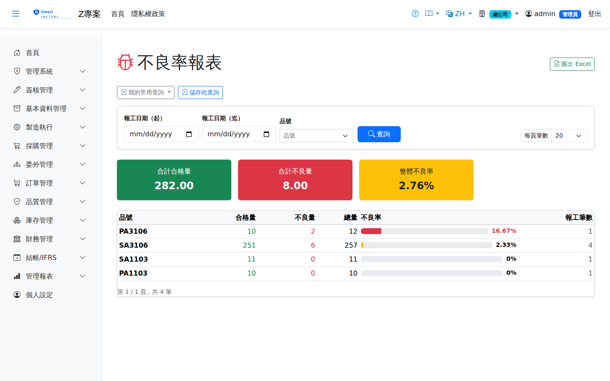

不良率報表Defect rate report
路由：/DefectRate | 不良率統計（依品號/工序/原因）Route: /DefectRate | Defect rate statistics (by item, operation and reason)
彙總報工的不良數與不良原因代碼，計算各品號/工序/機台的不良率趨勢，作為品質改善依據。Aggregates reported defect quantities and reason codes and works out the defect rate trend by item, operation and machine, as input to quality improvement.

不良率報表畫面截圖（示意，實際欄位/資料依權限與查詢條件而異）Defect rate report screenshot (illustrative; actual fields and data vary by permission and query criteria)
查詢Search
1
查詢列輸入條件後點「查詢」；欄位標題可點擊排序，清單下方有分頁導航。Enter your criteria on the query bar and click "Search"; column headers can be clicked to sort, and the paging controls sit below the list.
2
維度可切換品號、工序、不良原因；附圖表呈現。The dimension can be switched between item, operation and defect reason, with charts.
欄位說明Field reference
查詢條件Query criteria
| 條件Condition | 說明Guide |
|---|---|
| 報工日期（起 / 迄）Report date (from / to) | 納入統計的報工日期區間Production report date range included in the statistics |
| 品號Item | 只看單一料件；留空為全部A single item; leave blank for all |
報表欄位Report fields
| 欄位Field | 說明Guide |
|---|---|
| 品號Item | 生產的料件Item produced |
| 合格量OK Qty | 區間內回報的良品數合計Total good pieces reported in the period |
| 不良量NG Qty | 區間內回報的不良品數合計Total defective pieces reported in the period |
| 總量Total Qty | 合格量 ＋ 不良量Good quantity + defective quantity |
| 不良率Defect Rate | 不良量 ÷ 總量；異常偏高者可再由不良原因追查Defect quantity ÷ total quantity; unusually high figures can be traced further through the defect reason |
| 報工筆數Reports | 納入統計的報工紀錄筆數，樣本太少時比率參考性較低Number of production reports in the statistics; with too small a sample the ratio means less |